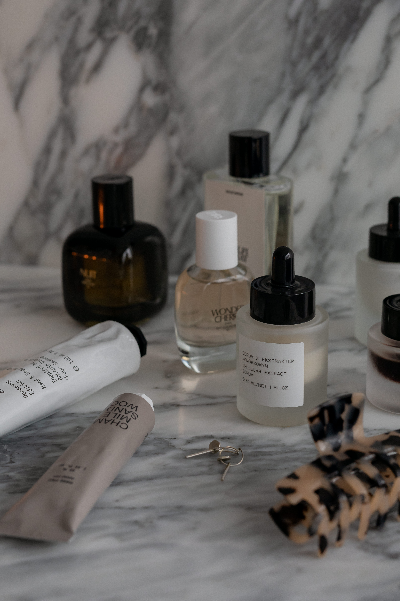
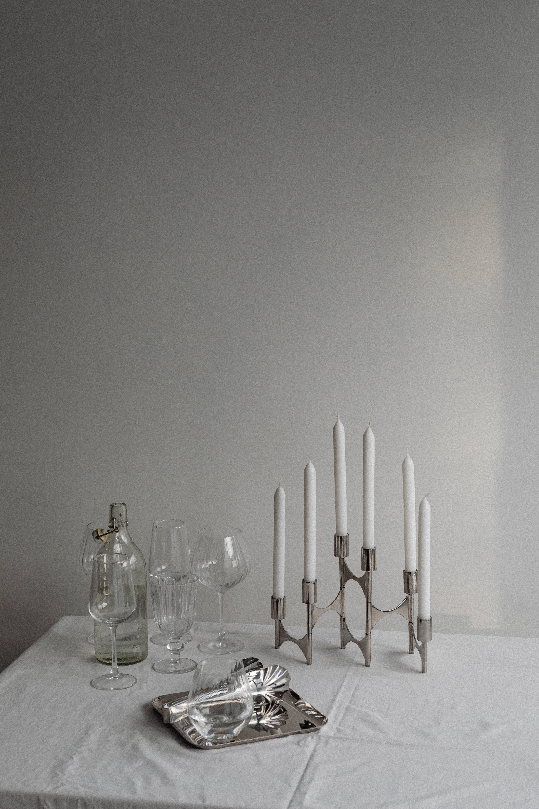

Here’s a philosophy I hold about magical ritual: it’s all about intention and feeling. Whatever gets you into the emotional state you actually need is the ritual, whether or not it looks like something you found in a book.
Want abundance? You need to feel success, momentum, like you’re already reaping what you’ve sown. Want a curse? You need real anger, real justification, the sense that you’re owed something back. I don’t personally do curses or love spells, they sit in a moral grey area for me, but the principle holds regardless: don’t just follow someone else’s ritual word for word (yes, I see the irony of saying that while writing you one). Prioritize the feeling. Build the ritual around getting yourself there.
Set the space
You need a bath. No tub? A really good shower works too, you just do the intention work afterwards instead of during, once you’re clean, soft, and feeling good.
If you’ve got a tub: run the water, and add Epsom salts. Always Epsom salts, that magnesium is doing you good either way. From there, layer in whatever makes you feel loved:
- Rose petals or dried florals (lovely for scent, but fair warning, they get slimy and leave little bits everywhere, skip them if that’s going to gross you out)
- A scented oil. Quick safety note: fragrance oils are synthetic and not made for skin, while essential oils are natural but many still need diluting before they touch skin, since oil doesn’t mix evenly into bathwater. Check before pouring anything straight in.
- A bath bomb, if you’ve planned ahead
- Oatmeal, soy milk, or milk powder for a silkier bath
- Whatever’s already in your cupboard. It doesn’t need to be elaborate.
Then set the scene. Light some candles, put music on, and make sure nobody’s about to walk in on you mid soak. This isn’t just a wash and out, so don’t treat it like one. Stay in as long as you want, top up the hot water whenever it starts going cold, stay until you look like a prune. I like folding a towel behind my neck so I can properly lean back and soak.

Build the love first
Sit with yourself and shift your focus inward. Start by thinking about what you already love about yourself. Don’t rush this part.
What do you love about your body, physically? If you’re struggling with appearance, go to function instead. Do you love your legs because they carry you? Your hands because they hold the people you love? Your eyes because they take in the world? You might hate certain parts of your body, but lets focus on the ones that you can love right now. Find whatever you can, even if it’s small. Even if it’s just “I have really good fingernails.” That counts.
Then your mind. Do you love how you handle problems? How you show up for people? Your values, and whether you actually stand on them? The impact of the work you do? These aren’t the things you see in a mirror. Forget the mirror. Think about who you are.
Build those feelings of self love, surrounding yourself with them and sit in that feeling. Let it fill you up. And if you want to heighten it with a glass of wine, a joint, chocolate, self-pleasure, whatever deepens the feeling for you, go for it. Just keep water nearby, baths dehydrate you fast.
Then face what’s actually holding you back
A self-love ritual that only lets you leave feeling good, without touching why you didn’t feel good in the first place, isn’t finished.
So once you’re full of that warm, loved feeling, shift to the things you’re lacking. Was there a situation you handled badly, something still shaking your confidence? Ask yourself honestly: did I make a mistake here?
If yes, the move is accountability. What can you actually do to make it right? Don’t let it stew, start building the plan now so you can act on it the moment you’re out of the bath. Witchcraft is about moving the needle, not sitting in your head about it.
If no, if you handled it as well as you could and people’s feelings still got hurt, then you did what you had to do. Let it go. Stand on it and move forward.

Other insecurities can be addressed the same way. Find the root of the feeling and examine it. Was there a different choice that you could, or can make? Feeling insecure in social situations, for instance. Why do you feel that way? Are there experiences you can seek out that will challenge you to get used to discomfort?
Same process applies for anything physical you don’t love: can you actually fix it, yes or no? If yes, stop stressing and start planning. Skin’s been rough? Book the dermatologist. Feeling unfit? Plan a daily walk and clear out the food that’s keeping you stuck. If you can’t fix it, write it down, burn the paper, whatever ritual you need, but let it go. It’s not doing anything for you except dragging you down.
By the end, you shouldn’t feel doom and gloom. You should feel like you’ve got a to-do list, tangible things that’ll make you love yourself more, not an overwhelming weight.
Get out and actually do it
Wash off, dry off, moisturize, do your hair, your skin, your nails, whatever makes you feel gorgeous. Then start the list.
Because that’s the part that actually matters. The ritual doesn’t live in your head. Journaling and meditating without ever acting is how the world moves on without you. Trust me on that one.
← Back to Rituals